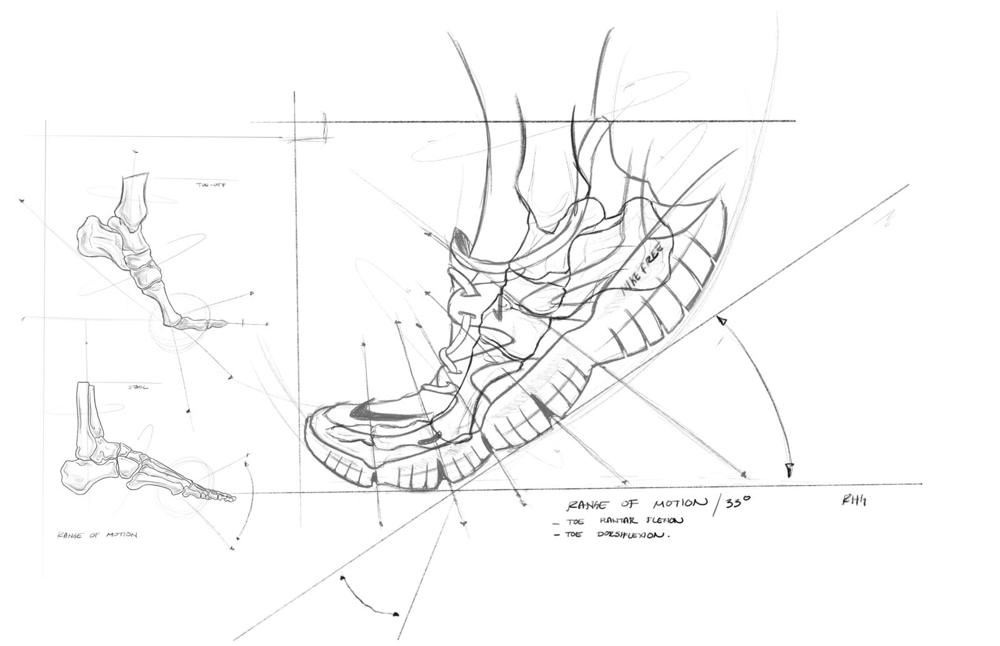

29/09/2020
The Impact of Flyknit Technology
A brief overview of the impact of Flyknit technology and how it revolutionised the footwear industry. Reducing waste, reducing weight and reducing production costs.
Nike Flyknit is a digitally enhanced knitting process best known in its role in lightweight, formfitting and virtually seemless shoe uppers. The technology uses high-strength fibres to create lightweight uppers with targeted areas of support, stretch and breathability. Flyknit has not only been revolutionary to consumers but it has caused a significant reduction in waste throughout the footwear industry.
The idea dates as far back as the ‘80s as Nike experimented with an ultra-light mesh sneaker - the Sock Racer. Initially working towards Flyknit due to the runners’ desire for trainers that had the qualities of a sock - a snug and supportive fit that is virtually unnoticed by the wearer.
Early adoption
Nike Free, a series of running shoes adored by runners worldwide, were the first shoes to whole-heartedly adopt Flyknit technology. Due to their intentional “bare-foot” design, the shoes offer enhanced foot flexibility, better balance and improved strength. Nike’s elite athletes are seen using the Free series for jogging and low-mileage track workouts.
Flyknit was a perfect fit as they reduced weight and provided superior comfort over any alternative on the market. Especially as the modern technology that allows Nike to emphasize more support in certain areas of the shoe was in early development stages at the time. Making the Flyknit upper unsuitable for other sports shoes.
Impact
The Knit technology has transformed production within the footwear industry. Compared to cut and sew footwear, experts suggest that Flyknit construction has led to a 60% reduction in waste from each shoe. Prior to its development, offcuts from the upper portion of the shoe generated significant waste. Since 2012, the technology has reduced nearly 3.5 million pounds of waste.
Despite the clear advancements, Nike has not stopped there. In the upper portion of some of their latest models, such as the Nike Flyknit Lunar1+, waste has been reduced by some 80% compared to traditional Nike running footwear.
Flyknit technology contributed to Nike being awarded the title of 'most innovative company of 2013' by Fast Company magazine.